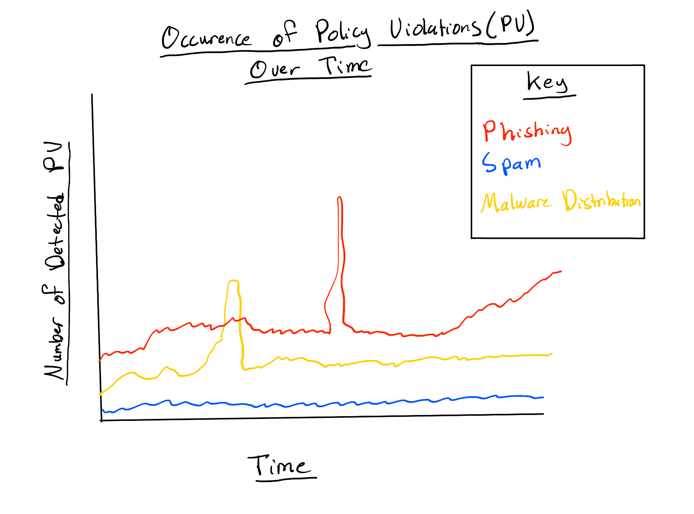

Abuse Detection for Google Products
- Skills Used and Learned: Python, C++, SQL, Golang, Protocol Buffers, Matplotlib, NumPy, Pandas.
In this project, my role involved the development of a Collab notebook tailored for the comprehensive analysis and graphical representation of policy violations observed over time within Google products, especially Gmail. The primary objective was to contribute to scalable abuse detection by creating a tool that can effectively graphically track the presence of various policy violations, such as phishing and spam found in Google products such as Gmail.
I implemented functionalities within the notebook to systematically analyze the large dataset, focusing on the temporal dimension of policy violations. By examining the evolution of policy violations over time, the software aimed to uncover patterns, trends, and potential anomalies in the occurrence of unauthorized activities through visualizations such as graphs and charts. Visual representations are crucial for quickly identifying trends and anomalies within large datasets.
The graph below demonstrates what one output of the project was.
In addition to this, the collab notebook I wrote analyzes the large dataset to output various other types of graphs that provide other insights. Doing this required parsing and analyzing large datasets, and using modules such as Matplotlib, NumPy, and Pandas in order to create scaclable visualizations.
In summary, the project resulted in the creation of a powerful Collab notebook dedicated to the temporal analysis and graphical representation of policy violations, ultimately contributing to the scalability of abuse detection mechanisms across Google products. The focus on different policy violations, such as phishing and spam, underscored the versatility and effectiveness of the developed tool in addressing a range of security challenges.